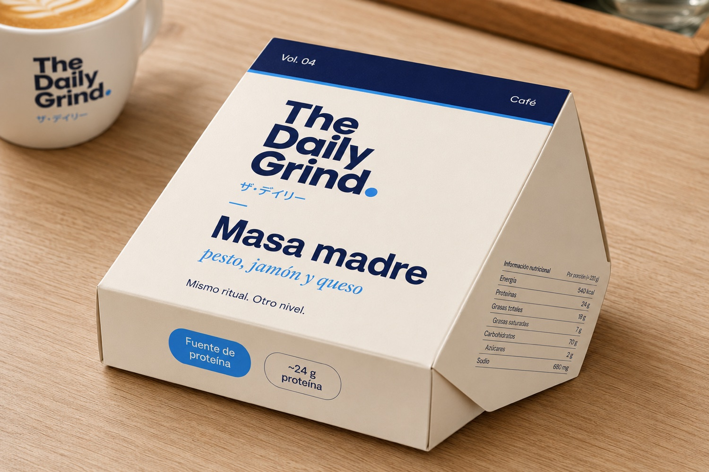

Caja sándwich · masa madreDieline simplificado · tapa 130 × 70 · alto 45 mmVariante:·
Nota de producción: este es el arte de las caras impresas + un dieline orientativo (líneas punteadas = plegado, rayado = solapa de pegado).
Para producción real, el arte debe montarse sobre la plantilla troquelada exacta del convertidor (cada imprenta tiene su troquel). Pídele a tu proveedor su dieline en vector y trasladamos estas caras 1:1.

Mockup de referencia visual · ojo: la foto trae datos nutricionales inventados por la IA; los reales (sodio 1.350 mg) están en el arte de abajo ↓
ALTO EN SODIO
Tapa superior
ザ・デイリー・グラインドVOL. 04 · CAFÉ
The Daily Grind
ザ・デイリー
Masa madrepesto, jamón y queso
Mismo ritual. Otro nivel.
Frente
The Daily Grind
Fuente de proteína~24 g proteínaPan de masa madre
Lateral · nutrición
Información nutricional
Porción: 1 unidad · ~220 g
Energía
560 kcal
Proteínas
24 g
Grasas totales
25 g
· saturadas
8 g
Carbohidratos
57 g
· azúcares
3 g
Fibra
4 g
Sodio
1.350 mg
Lateral · marca
ザ・デイリー
Vol. 04 · Café
Lote · DDMMAA Fresco hoy
Información nutricional aproximada. Valores referenciales sujetos a verificación. · The Daily Grind · Vol. 04 Café